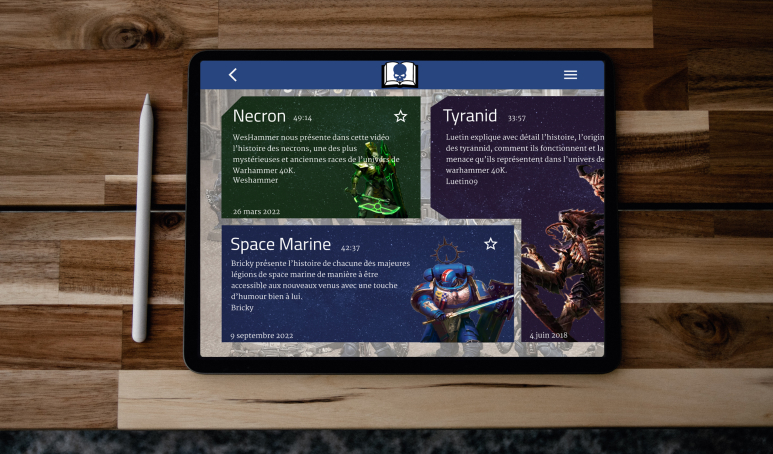
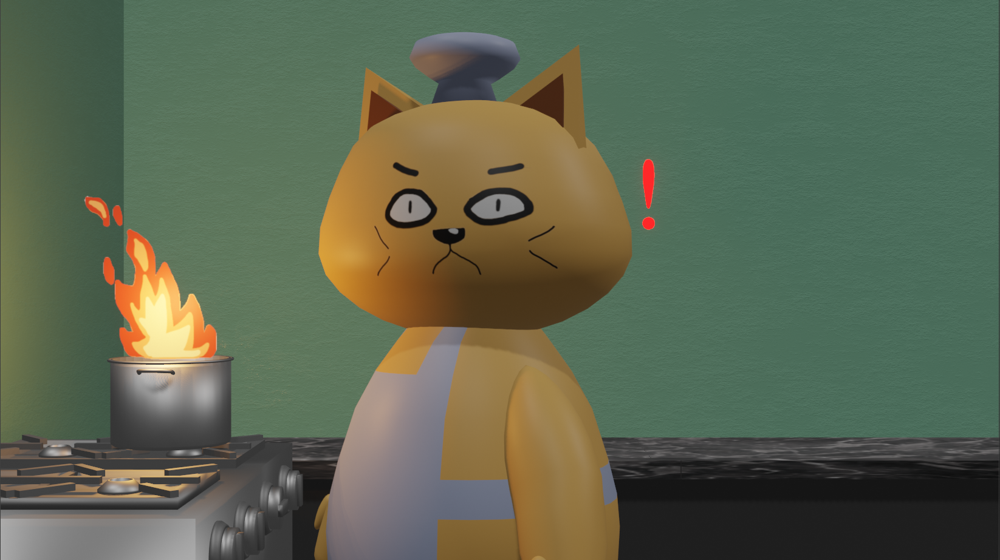
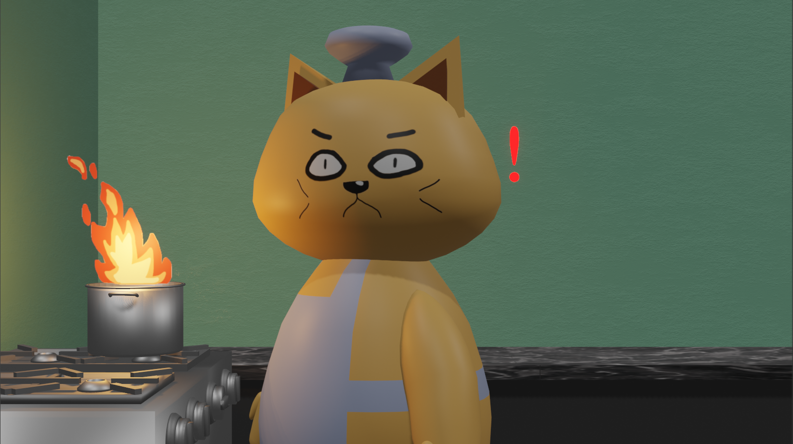

Mes projets
Refonte du site web de la Baie-Sainte-Catherine


Programmation web | Design
Curation de contenu vidéos et design


Design et prototypage d’une application de curation de contenu vidéo sur l’univers de Warhammer 40K .
En voir plusPrototypage | Design
TimConf
Programmation web | Wordpress
Chatastrophe :
Animation multimédia


 

Animation multimédia à partir de Blender ayant pour but le divertissement des plus jeunes.
En voir plusAnimation/Modélisation 3D
Première rencontre

Animation d’un tank qui tombe sur une étrange découverte.
En voir plusAnimation/Modélisation 3D